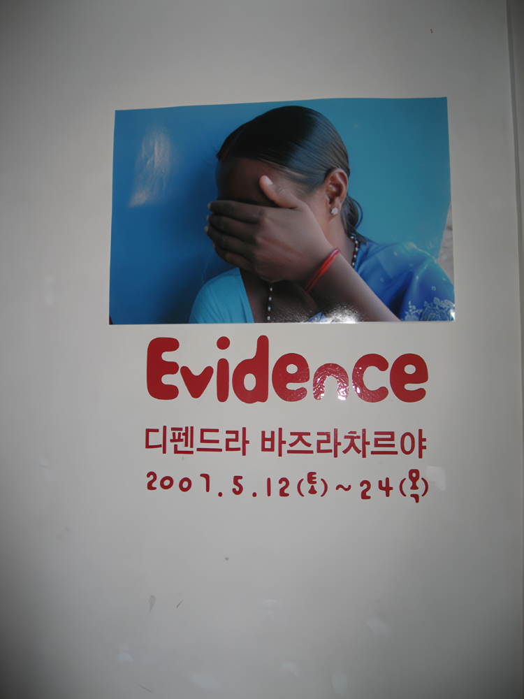
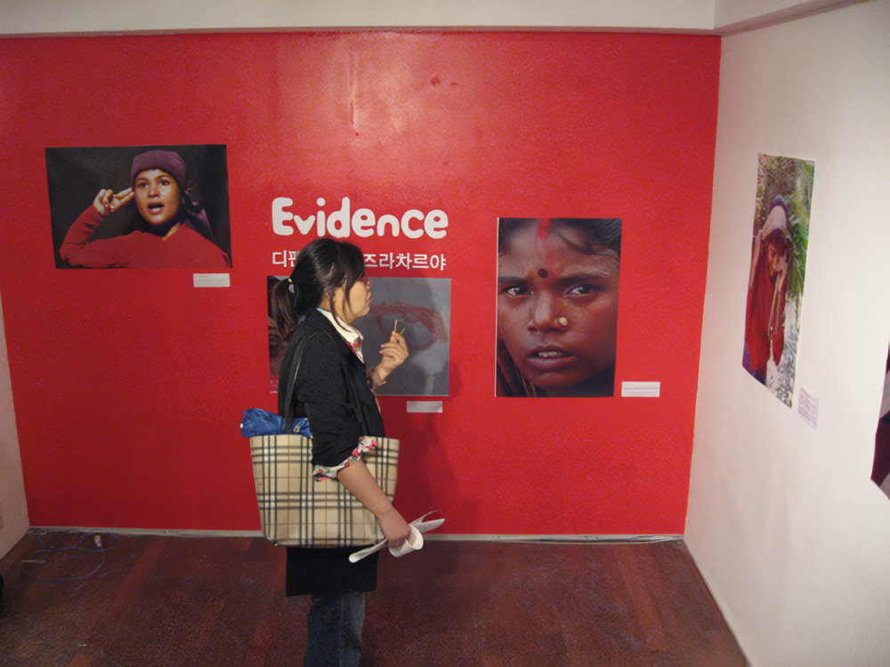
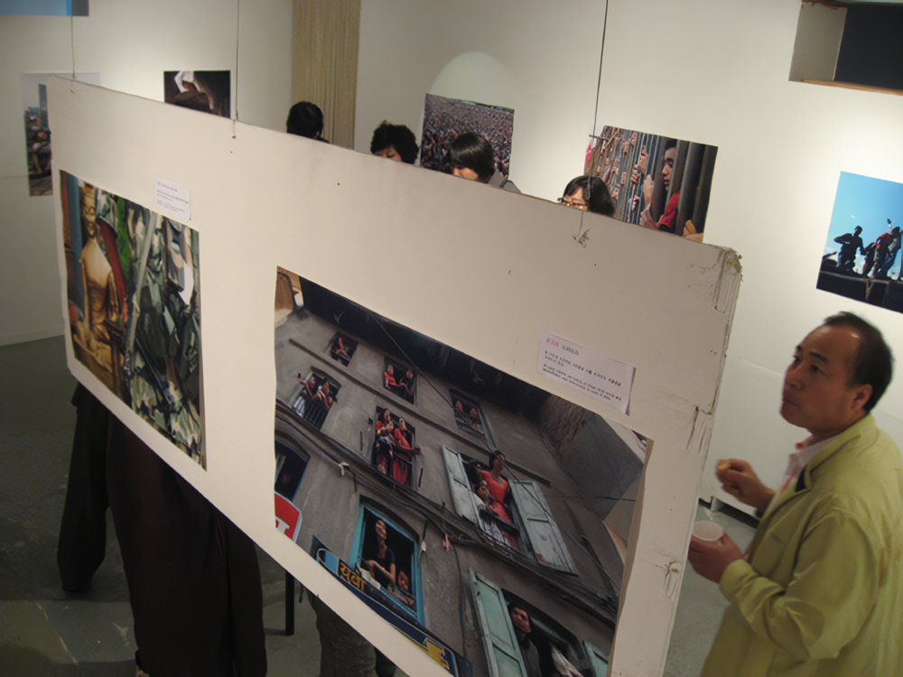
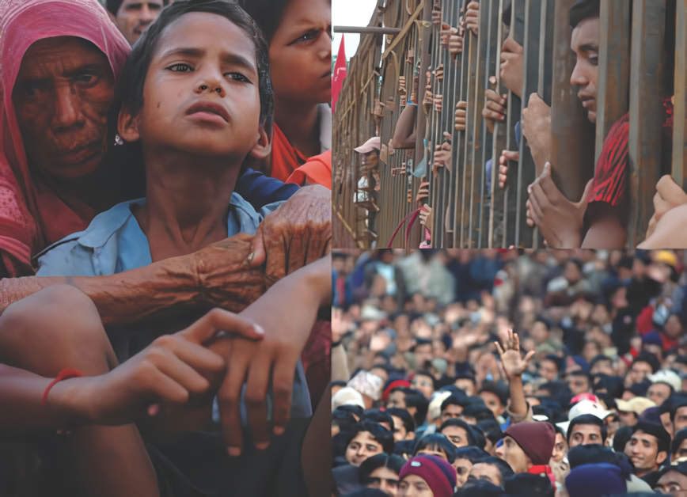
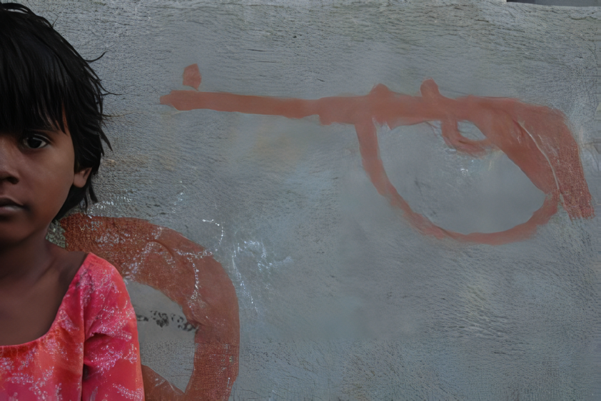

디펜드라 바즈라차르아 - Evidence
스톤앤워터 도마뱀극장 개관기념
20070512 ▶ 20070524

관람시간 1030 - 1800 일요일 휴관
보충대리공간 스톤앤워터
경기도 안양시 만안구 석수2동 286-15번지
Tel. 031_472_2886
www.stonenwater.org
디펜드라는 네팔출신의 프리랜서 사진작가로 다양한 국제 경험을 바탕으로 빈곤, 계층 간의 갈등, 억압받는 이들에 관한 모습들을 그의 카메라를 통해 담아왔다. 이번 전시회 ‘에비던스’에 소개될 사진들은 네팔 민주항쟁을 주제로 한 작품들이다. 우리에게 네팔은 히말라야, 불교 등의 평화로운 자연의 이미지를 떠올리게 하지만, 실상 네팔 내부의 실상을 들여다보면 왕정 독재로 민중을 억압하는 정부군과 이에 대항하는 반정부군의 내란이 현재까지 끊이지 않고 있다.
 
1960년 이후부터 현재까지 계속 되고 있는 왕정 독재는 수십 년간 네팔 민중을 억압해왔으며, 이에 저항하고자 네팔 공산당이 주축이 된 ‘미오이스트’가 1996년에 조직되었다. 정부군과 미오이스트 간의 싸움이 시작되면서 정부군은 무고한 양민까지 학살했고, 그로인해 양민들은 반정부군으로 가담해 마오이스트의 세력이 점점 커지고 있다.
한 통계에 의하면 2001년에서 2002년 사이 정부군이 살해한 마오이스트가 4,100명, 일반민중이 200명, 마오이스트가 살해한 정부군이 700명, 일반민중이 400명에 이른다고 한다.
 
디펜드라 사진의 또 다른 특징은 메시지를 담고 있으면서도 동시에 색채와 색감, 조형언어를 풍부하게 담고 있다는 것이다. 디펜드라가 표현하는 손과 여성의 이미지를 살펴보면, 손이 주는 미묘한 감정과 여성이 가지고 있는 문화적 상징성, 감정이 그대로 담긴 눈빛을 통해 더욱 강한 긴장감을 불러일으킨다.